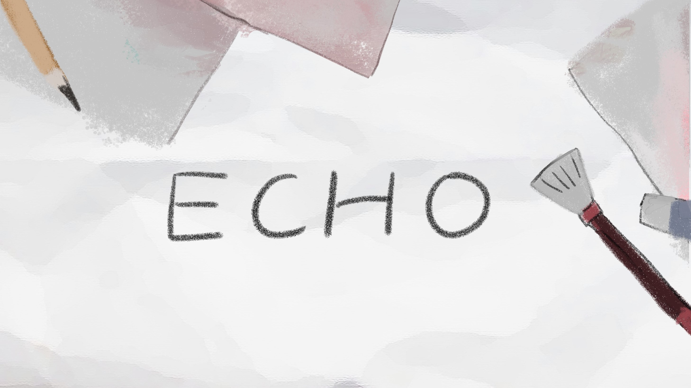

Inroduction
ECHO is a first-person story-oriented 3D puzzle game. In this game, a famous painter who had just died came to a place called Reincarnation Office and was told that he had to go back to the time that caused his three greatest regrets in life. Only when he let go of all the regrets could he reincarnate. Players will take on the role of the painter, learning about the story of his past and helping him make better choices in these situations.
Click
Team Contribution
ECHO is finished by a team with eight members. I was the plot designer and level designer of the team. I designed the game's background and characters and completed all the text writing, which is more than 10,000 words in Chinese. At the same time, I planned the basic gameplay and determined the main logic of each stage. I also designed most puzzles in the game, such as finding clues or playing small games according to the plot.
Besides, as the team leader, I also did a lot of work, including task distribution, progress monitoring, and coordinated communication within the team.
Design Inspiration
The death of my aunt, a very close family member, inspired me to design this game relevant to the afterlife. Being filled with sadness, I felt regretful about those things we didn't get a chance to do together.
In traditional Chinese stories, there is a place called Naihe Bridge where the dead must drink Mengpo soup to forget their previous lives before being reincarnated. Based on this idea, I designed a fictional place called "Reincarnation Office". Instead of being imbued with the ominous atmosphere of death, this place is more like a busy office hall. All the souls of the dead must fill in a form as a way of security check, and they can only leave after confirming that they no longer have regrets about their previous lives. I designed the employees of the Office as cute ghosts who speak in a serious tone and used this contrast to weaken the fear of death in the dialogue. The dead no longer forgets their regrets by drinking Mengpo soup; instead, they go back to the past and make different choices in the Reincarnation Office to make up for their regrets. Althoughthere would be no actural changes to the past life, the dead can feel a sense of relief by reliving that moment and letting their regrets go.
In the game, players act as the famous painter who has just passed away. He came to the Reincarnation Office with deep regrets and returned to the past three moments that made him most regretful. He was given a chance to make a new choice in these moments. After letting go of all regrets, he would be ready to leave the Office and embrace his next life. I also design an ending in which the painter can still leave the Office even if nothing has changed, because if one doesn t dwell on it too much, some regrets can become precious memories. Through this game, I hope players can let go of their sadness for the dead, and at the same time, cherish the time spent with the living and try their best to leave fewer regrets in life.
Plot and Level Designe
The main body of the game is divided into three stages based on the three things the painter regretted, and some conversations with the ghost in the Office are added between these stages. At the beginning of each stage, I added a number of items that can be viewed in detail and characters that can be talked with, which can help players to better understand the character's situation by interacting with the environment.
The first story revolves around the painter who forged a famous painting for a rich man under tremendous financial pressure . In the Office, the painter would have a chance to secretly take this painting from the rich man's collection and leave the city to start a new life. Considering the painter's situation, players must solve puzzles about where the painting is located and how to leave the collection hall while avoiding patrollers.
The second story is about the painter who missed the chance to bid farewell to his best friend before his friend headed to the battlefield. "Finding" is the theme of this stage. Since his friend is a violinist, I make the melodious violin sound run through all the scenes. At the end of the stage, by listening to the sound and identifying the position, players need to find him in the crowd before he boards the train and leaves.
The third story tells that the painter ran away from home at a young age when his parents opposed him to learn painting. After spending a long time reconciling with his parents, he returned home and discovered they had passed away years ago. I designed many mechanism puzzles in the house. Even opening a door requires a lot of efforts, which can reflect his unfamiliarity with his family. At the end of the stage, the painter read a diary written by his mother and felt the passage of time and their missing and love for him.
Story Behind
It is my first time designing the plot and level for a large game. Faced with inevitable lack of inspiration, I tried a lot of ways to seek inspiration, such as brainstorming and reading number of related books. I also learned how to clearly express my ideas to the programmers and art designers, and communicate with them about the feasibility and the specific implementation of these ideas.
As the team leader, I learnedto coordinate different members in a multi-person cooperation project. At the beginning, our progress was slow because of insufficient work plan. Hence, I set up project checkpoints and followed up on every part of the project team's work, making sure they finish their work on time.